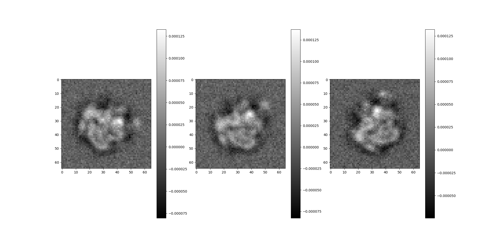
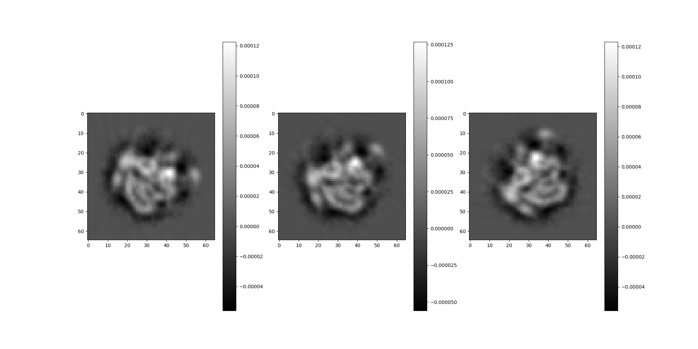

Note
Go to the end to download the full example code.
Generating 3D Volume Projections¶
This script illustrates using ASPIRE’s Simulation source to generate projections of a Volume using prescribed rotations.
import os
import numpy as np
from aspire.noise import WhiteNoiseAdder
from aspire.source.simulation import Simulation
from aspire.utils import Rotation
from aspire.volume import Volume
Configure how many images we’d like to project¶
n_img = 10
Load our Volume data¶
This example starts with an mrc, which can be loaded as an ASPIRE Volume.
file_path = os.path.join(
os.path.dirname(os.getcwd()), "data", "clean70SRibosome_vol_65p.mrc"
)
v = Volume.load(file_path, dtype=np.float64)
# Then we downsample to 60x60x60
v.downsample(60)
1 float64 volumes arranged as a (1,) stack each of size 60x60x60.
Defining rotations¶
We generate a collection of in-plane rotations about the z-axis.
# First get a list of angles to test
thetas = np.linspace(0, 2 * np.pi, num=n_img, endpoint=False)
# Instantiate ASPIRE's Rotation class with the set of angles.
# This will allow us to use or access the rotations in a variety of ways.
rots = Rotation.about_axis("z", thetas, dtype=np.float64)
Configure Noise¶
We can define controlled noise and have the Simulation apply it to our projection images.
noise_variance = 1e-10 # Normally this would be derived from a desired SNR.
# Then create a CustomNoiseAdder based on that variance, which is passed to Simulation.
white_noise_adder = WhiteNoiseAdder(var=noise_variance)
Setup Simulation Source¶
# Simulation will randomly shift and amplify images by default.
# Instead we define the following parameters.
shifts = np.zeros((n_img, 2))
amplitudes = np.ones(n_img)
# Create a Simulation Source object
src = Simulation(
vols=v, # our Volume
L=v.resolution, # resolution, should match Volume
n=n_img, # number of projection images
angles=rots.angles, # pass our rotations as Euler angles
offsets=shifts, # translations (wrt to origin)
amplitudes=amplitudes, # amplification ( 1 is identity)
seed=12345, # RNG seed for reproducibility
dtype=v.dtype, # match our datatype to the Volume.
noise_adder=white_noise_adder, # optionally prescribe noise
)
/opt/hostedtoolcache/Python/3.9.25/x64/lib/python3.9/site-packages/sphinx_gallery/gen_rst.py:794: UserWarning: Gimbal lock detected. Setting third angle to zero since it is not possible to uniquely determine all angles.
exec(self.code, self.fake_main.__dict__)
Yield projection images from the Simulation Source¶
# Consume images from the source by providing
# a starting index and number of images.
# Here we generate the first 3 and peek at them.
src.images[:3].show()
src.projections[:3].show()
# Here we return the first n_img images as a numpy array.
dirty_ary = src.images[:n_img].asnumpy()
# And we have access to the clean images
clean_ary = src.projections[:n_img].asnumpy()
# Similary, the angles/rotations/shifts/amplitudes etc.
- 
- 
Total running time of the script: (0 minutes 0.800 seconds)